JoyAI-Image 是京东 Joy Future Academy 发布的一个统一多模态基础模型， 将图像理解、生成、编辑三个任务整合到一个框架中。与以往把这些任务拼接在一起的方案不同， JoyAI-Image 的核心主张是"唤醒空间智能"（awakening spatial intelligence）—— 把 3D/空间理解作为贯穿三个任务的第一类属性，而非事后补充的模块。
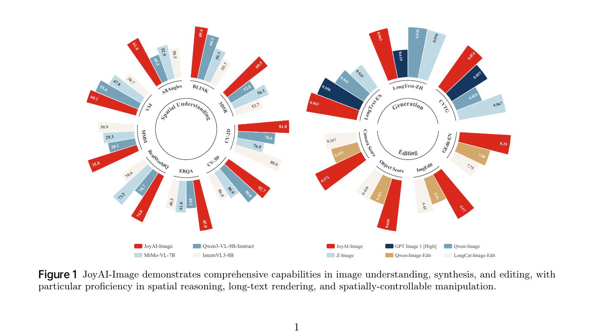
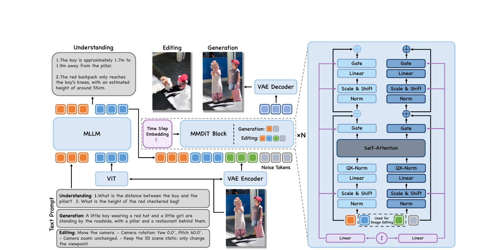
基于 Qwen3-VL-8B-Instruct，经过空间专门 SFT 强化。 双重角色：(1) 独立理解引擎处理纯 VQA/spatial reasoning； (2) 意图解析中介为 MMDiT 提供语义和空间先验。
采用 Wan-2.1-VAE，利用因果 3D 卷积实现优越的时空压缩。 保留高频细节（小文本、细纹理），这对 text-rendering 至关重要。
16B 参数的双流 Multi-Modal Diffusion Transformer。40 层，32 attention heads， hidden dim 4096，使用 MRoPE 替代 Qwen-Image 的 MSRoPE， 更好地与空间条件对齐。
先 SFT MLLM 强化空间理解 → 从头训练 MMDiT（用 MLLM prior 作为条件）→ 最后微调整个框架支持 instruction-based editing。
| 参数 | 值 | 参数 | 值 |
|---|---|---|---|
| Input/Output Dim | 16 | Attention Heads | 32 |
| Patch Size | 1 × 2 × 2 | Modulation | WanX |
| Number of Layers | 40 | Position Embedding | MRoPE |
| Hidden Dim | 4096 | RoPE Base θ | 10,000 |
| Text Hidden Dim | 4096 | RoPE Dim List | [16, 56, 56] |
现有 VLM 普遍缺乏 3D 空间智能——真实场景本质上由物体布局、相对几何、视角变化、跨视图一致性塑造， 而传统 2D 标注无法有效监督这些维度。 JoyAI-Image 的解法是构建一个以 3D box 为中心的数据引擎 OpenSpatial。
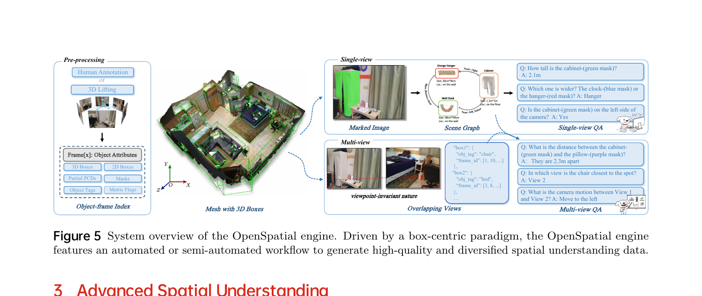
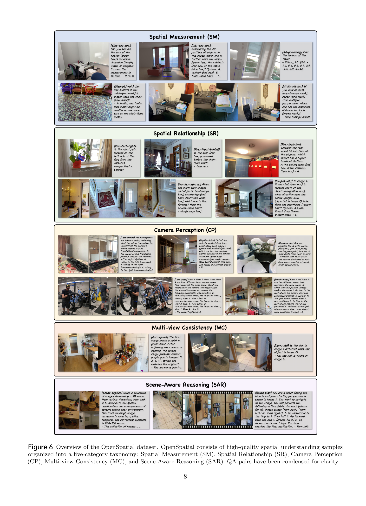
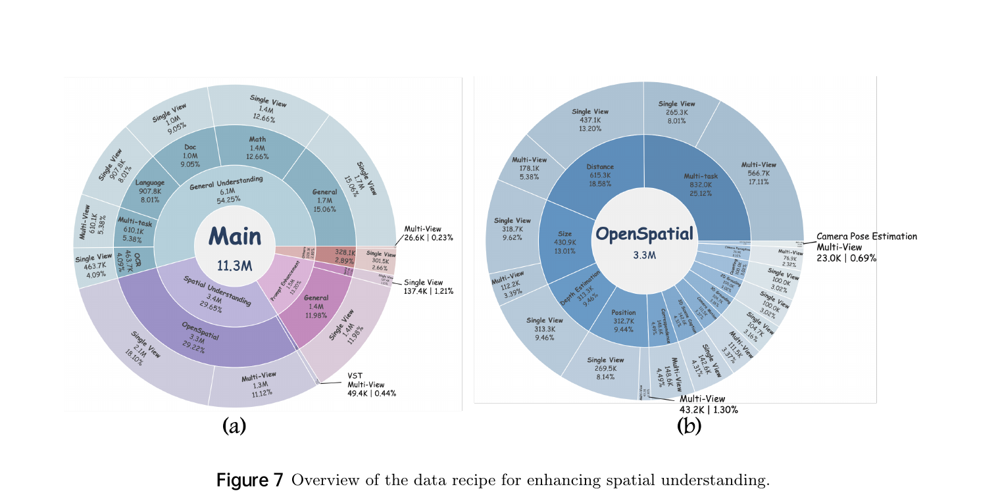
关键设计：KL 正则只对 general-purpose 数据应用，对 spatial 数据关闭。 因为基座模型的空间能力本来就有限，KL 约束会阻碍新的空间知识获取； 而 general domain 的原始能力需要保护以防遗忘。
| Benchmark | Gemini-2.5-Pro | Qwen3-VL-8B-Instruct (base) | JoyAI-Image-Und | vs Base |
|---|---|---|---|---|
| Spatial Avg (9 benchmarks) | 64.4 | 59.1 | 64.4 | +5.3 |
| VSI-Bench | 48.4 | 55.6 | 60.1 | +4.5 |
| AllAnglesBench | 61.3 | 49.5 | 61.0 | +11.5 |
| BLINK | 70.6 | 66.1 | 69.6 | +3.5 |
| 3DSR_C | 57.6 | 52.8 | 60.5 | +7.7 |
| CV-2D | 80.4 | 78.6 | 81.0 | +2.4 |
| CV-3D | 91.3 | 90.8 | 92.7 | +1.9 |
| ERQA | 55.8 | 40.1 | 45.0 | +4.9 |
| RealWorldQA | 77.3 | 70.7 | 74.0 | +3.3 |
| MMSI | 36.9 | 28.1 | 35.8 | +7.7 |
| General Avg (MMB/MathVista/MMStar/OCRB) | — | 86.6 | 84.3 | -2.3 |
T2I 训练数据管线是一个渐进式多阶段系统，共 5 个核心模块：
| 模块 | 目的 | 关键技术 |
|---|---|---|
| 1. Data Filtering | 从数十亿原始图像中筛选高质量样本 | In-house IQA（4 low-level + NIQE + CLIP-IQA + MUSIQ）；Caption-based 内容过滤 |
| 2. Captioning | 生成多层次、高保真的文本描述 | Short / Long / Extended Long / Structured JSON 四级 caption；OCR-aware 双语 captioning |
| 3. Rebalancing | 矫正长尾分布偏差 | 285K-tag 分类树 + embedding tagging + 逆对数下采样 |
| 4. Annotating | 人工标注高质量 SFT 数据 | 三维评分：Aesthetics (50%) + Information Density (30%) + Style Purity (20%) |
| 5. Multi-view Generation | 支持视角可控 T2I | Blender 4.5 渲染 ~1M 多视图图像，dense + structured JSON 双提示 |
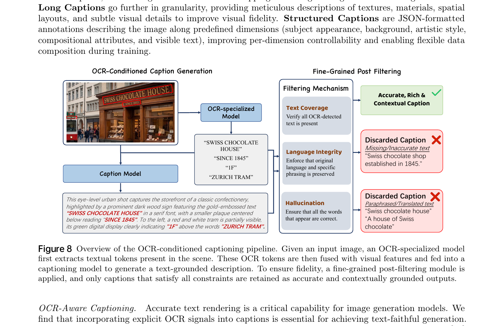
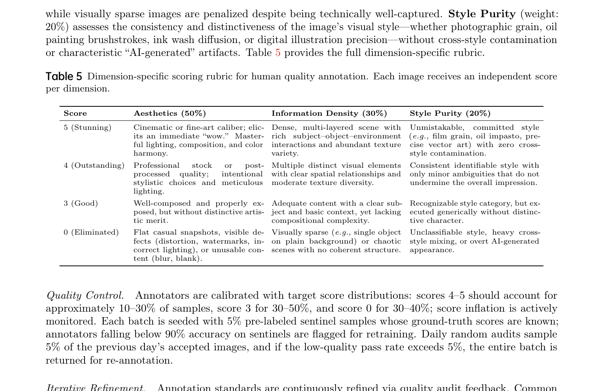
JoyAI-Image T2I 采用流匹配（flow matching）目标：
训练过程分 4 个阶段：
| Model | LongText-EN ↑ | LongText-ZH ↑ |
|---|---|---|
| FLUX.1 [Dev] | 0.607 | 0.005 |
| GPT Image 1 [High] | 0.956 | 0.619 |
| Z-Image | 0.935 | 0.936 |
| Qwen-Image | 0.943 | 0.946 |
| JoyAI-Image | 0.963 | 0.963 |
| Model | NED | CLIPScore | Word Acc ↑ |
|---|---|---|---|
| Seedream 3.0 | 0.8537 | 0.7821 | 0.5924 |
| GPT Image 1 [High] | 0.9478 | 0.7982 | 0.8569 |
| Qwen-Image | 0.9116 | 0.8017 | 0.8288 |
| JoyAI-Image | 0.9369 | 0.7990 | 0.8739 |
JoyAI-Image 在 T2I-CoReBench 的 Composition mean 上取得 94.2（超过所有对比模型， GPT Image 1 High 仅 79.8），同时 Reasoning mean 55.9 排名第二。 Composition 的领先说明模型在布局 + 文本 + 视觉外观的联合建模上有显著优势。
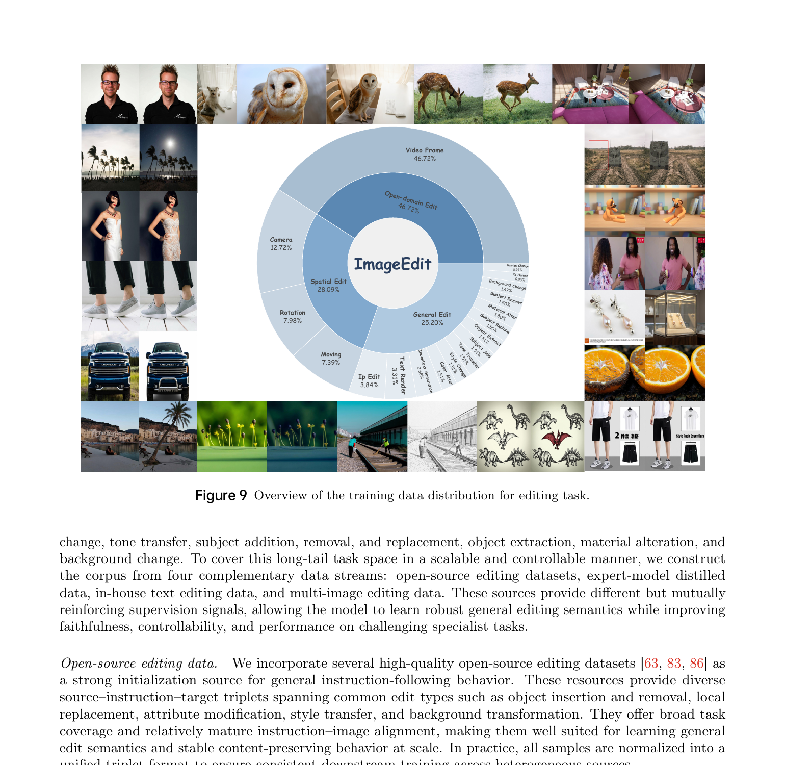
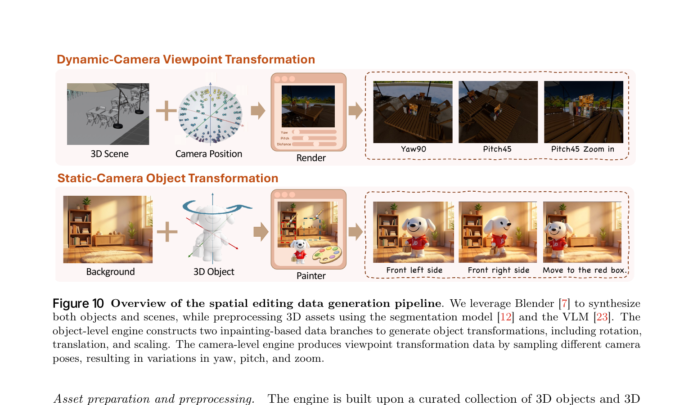
传统 2D 图像编辑数据很难提供几何上无歧义的监督——自然图像对中的视角变化、物体移动 大多是隐含的、不完全标注的。JoyAI-Image 通过 Blender 4.5 显式渲染 3D 场景， 把相机 6-DOF 运动和物体变换都作为可执行的指令模板，保证 source-target 对的几何一致性。
编辑模型使用与 T2I 相同的 MMDiT 架构，但输入多了 source image 的 VAE 编码作为条件。 训练也分 4 个阶段：
DiffusionNFT 目标函数：
| Method | Moving Score ↑ | Rotation Score ↑ | Viewpoint Error ↓ | Framing Error ↓ | Obj Overall ↑ | Cam Overall ↓ |
|---|---|---|---|---|---|---|
| Nano-Banana-Pro | 0.099 | 0.420 | 0.845 | 0.708 | 0.260 | 0.777 |
| Seedream4 | 0.163 | 0.482 | 0.839 | 0.701 | 0.323 | 0.770 |
| QwenImageEdit | 0.311 | 0.531 | 0.922 | 0.692 | 0.421 | 0.807 |
| LongCatImage-Edit | 0.373 | 0.505 | 0.802 | 0.684 | 0.439 | 0.743 |
| JoyAI-Image-Edit | 0.652 | 0.646 | 0.290 | 0.568 | 0.649 | 0.429 |
| Model | G_SC (EN) | G_PQ (EN) | G_O (EN) | G_O (CN) |
|---|---|---|---|---|
| Nano-Banana-Pro | 8.102 | 8.344 | 7.738 | 7.799 |
| Qwen-Image-Edit-2511 | 8.297 | 8.202 | 7.877 | 7.819 |
| FireRed-Image-Edit | 8.363 | 8.245 | 7.943 | 7.887 |
| JoyAI-Image-Edit w/ PE | 8.806 | 8.273 | 8.290 | 8.208 |
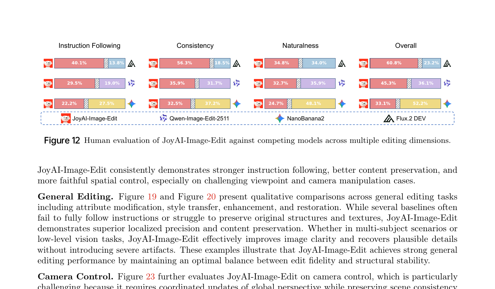
这是 JoyAI-Image 最有趣的创新之一——提出了一个生成式"视觉思维链"范式。 传统 VLM 回答空间问题时只能看一张固定的图，但有些空间关系从单视角本质上无法判断 （例如物体的背面、被遮挡的部分、视差下的高度关系）。
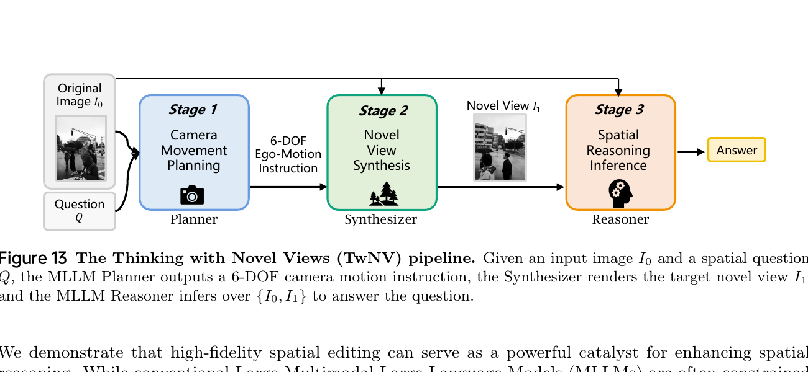
| Editor | Orientation | Location | Multi-Obj | Overall |
|---|---|---|---|---|
| None (w/o NV, baseline) | 63.6 | 80.9 | 60.5 | 68.8 |
| Qwen-Image-Edit | 61.8 | 77.8 | 61.5 | 67.4 |
| Nano-Banana-Pro | 60.9 | 83.0 | 63.6 | 69.5 |
| JoyAI-Image-Edit | 65.3 | 82.6 | 66.2 | 71.7 |
| Reasoner | w/o NV | JoyAI-Image (w/ NV) | Δ | Rel. 提升 |
|---|---|---|---|---|
| Gemini-3-Flash | 75.5 | 77.2 | +1.7 | +2.3% |
| GPT-5 | 68.8 | 71.7 | +2.9 | +4.2% |
| Qwen3-VL-235B | 58.6 | 61.8 | +3.2 | +5.5% |
| Qwen3-VL-32B | 56.2 | 60.6 | +4.4 | +7.8% |
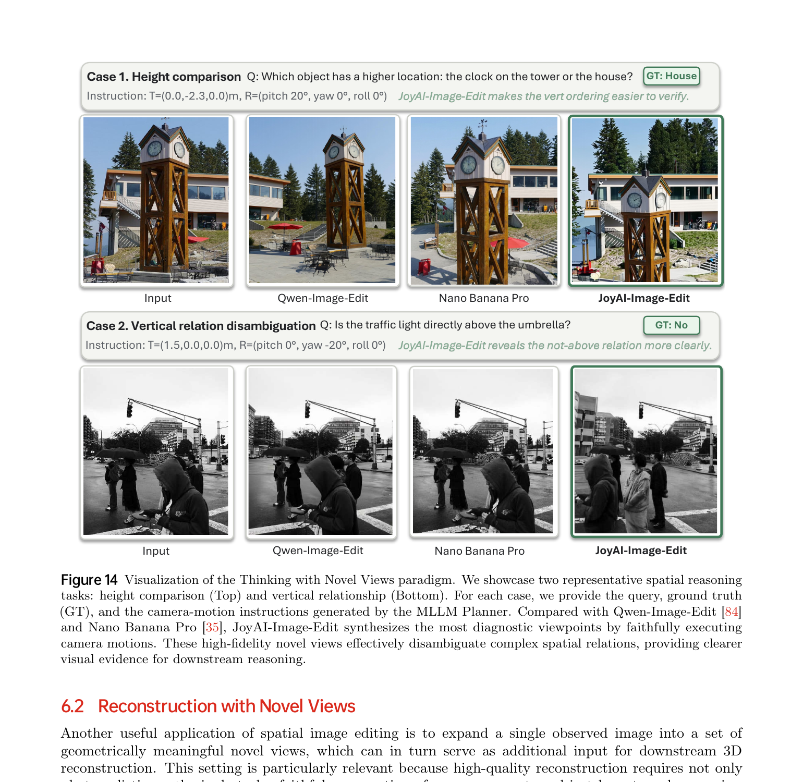
TwNV 还被证明对下游 3D 重建有帮助。单张图输入 VGGT（feed-forward 3D reconstruction 模型） 得到稀疏、不完整的几何；用 JoyAI-Image-Edit 生成的多视图一起输入， 重建的点云明显更密集、更完整。
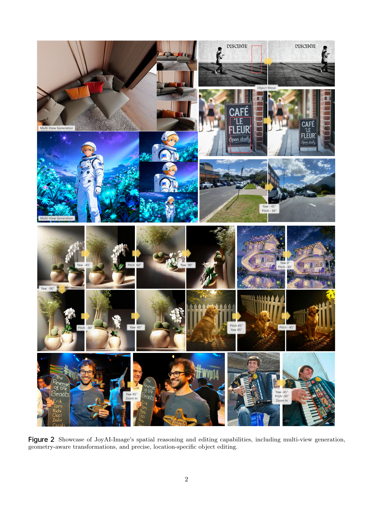
不是模块拼接，而是紧耦合的双向协作范式——MLLM 既是独立理解引擎， 又是 MMDiT 的 intent 解析器；understanding 提升 generation/editing， 而 generation 产生的多视角反过来增强 spatial reasoning。
以 3D box 为几何锚点，从 ScanNet/Matterport3D 等源头 lifting， 支持 single-view + multi-view 的 19 个子任务， 覆盖 Measurement/Relationship/Camera/Consistency/Reasoning 五大能力类别。
两阶段 OCR-conditioned 生成 + 三维后过滤（Text Coverage、Language Integrity、Hallucination）， 让 LongText-Bench EN/ZH 均达到 0.963 双 SOTA。 中英双语一致性远超 GPT Image 1（EN 0.956 / ZH 0.619）。
3D 驱动的编辑数据合成：Static-Camera Object Transformation + Dynamic-Camera Viewpoint， 提供几何上无歧义的 source-target 对， 使 SpatialEdit-Bench 的 Moving Score 达到 0.652（次名的 1.75×）。
把图像编辑作为"视觉思维链"工具——Planner/Synthesizer/Reasoner 三阶段流水线 解决单视角空间推理的本质盲区。在参数受限的 reasoner 上获得 7.8% 相对提升（Small-Model Dividend）。
T2I 用 Flow-GRPO（aesthetic + alignment 双奖励）； 编辑用 DiffusionNFT + Gemini-3-Flash + HPSv3 双 reward， instruction-prioritized 混合防止 reward hacking。
JoyAI-Image 代表了统一多模态模型的一个新方向：把空间智能作为第一类属性， 而不是事后增加的模块。三个任务（理解、生成、编辑）共享同一个空间底座， 使得它们可以互相强化——更强的理解驱动更精确的生成，而生成的多视角反过来 为 reasoning 提供新的视觉证据。